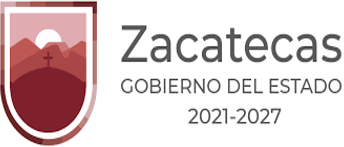
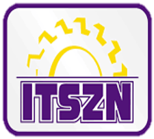
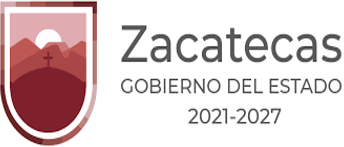
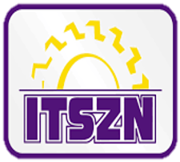

|
|---|
Estudia la Ingenieria en Tecnologías de la Información y Comunicaciones, actualmente cursa el 6to semestre de la carrera.
DATOS PERSONALES| Nombre: | Misael Alejandro |
| Apellidos: | Briones Pérez |
| Fecha de nacimiento: | 28 de Septiembre del 2000 |
| Lugar: | Juan Aldama, Zacatecas |
| Email: | MisaelBriones2800@gmail.com |
| Telefono: | 671-101-2272 |
| Nombre de la Institución: | Instituto Tecnológico Superior Zacatecas Norte |
| Clave: | 32EITOOO1S |
| Periodo: | 2019-2024 |
| Telefono: | 498-98-2-0456 |
| Email: | itszndirecciongeneral@gmail.com |
| Página Oficial: | http://www.itszn.edu.mx/ |